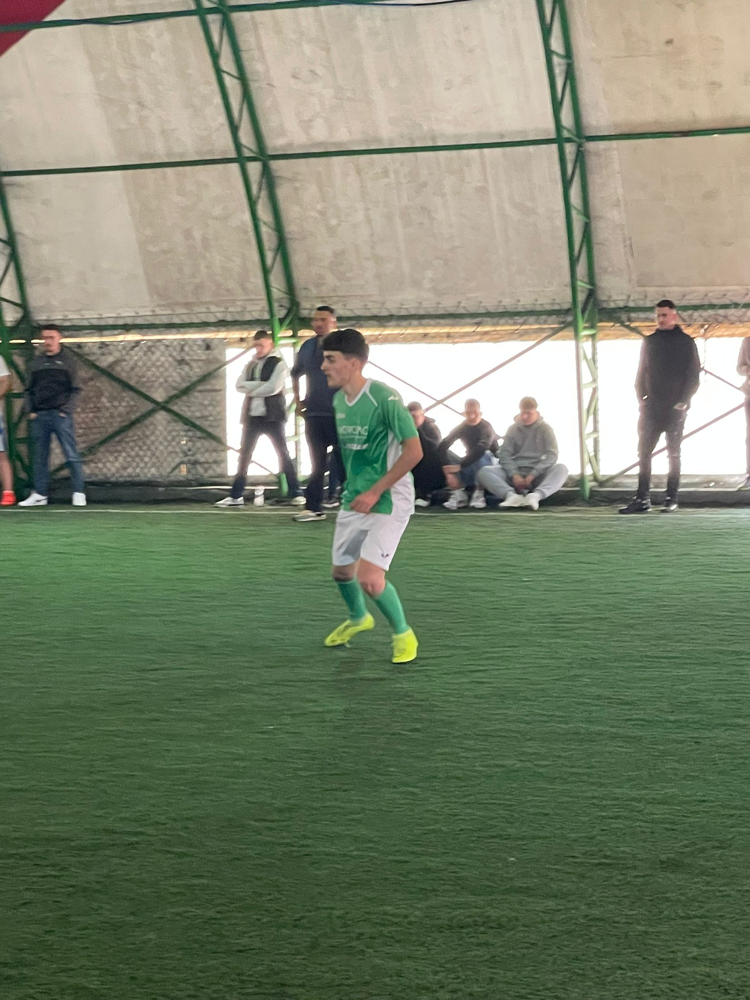
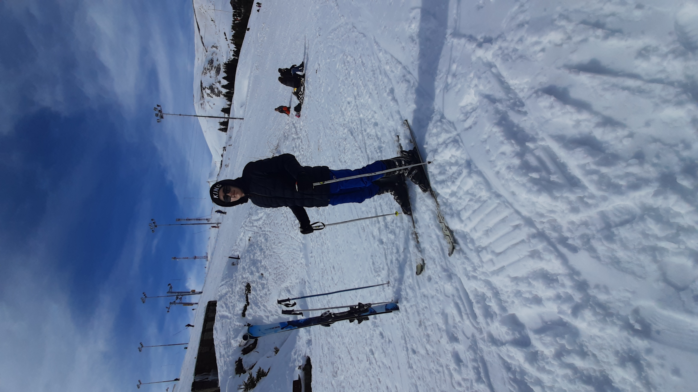
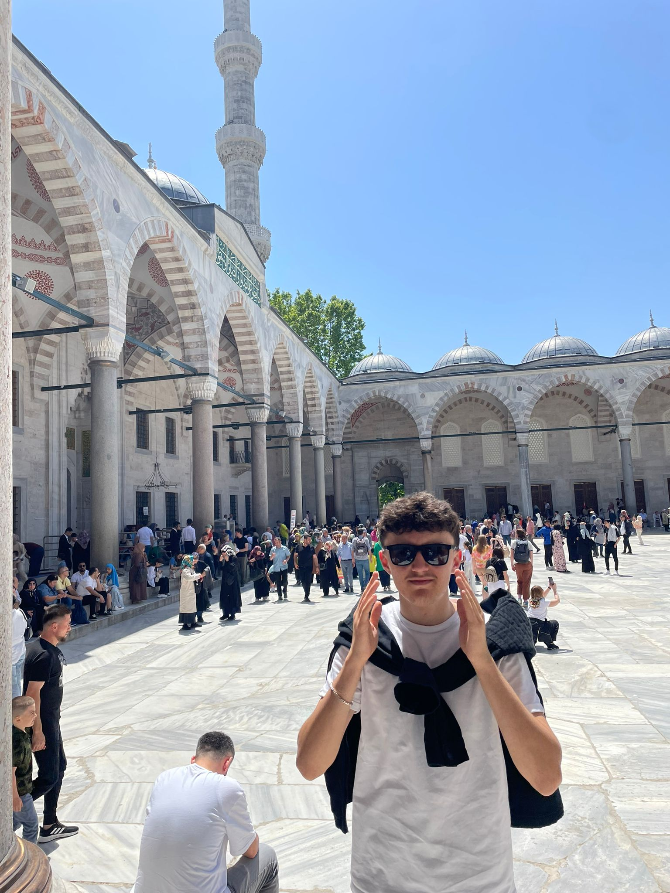

I am Ideal Mustafa, a 17 year old who lives in Zujince (a village in the municipality of Presevo). I am currently a student in high school "Skenderbeu".
I'd say I am a person which loves every activity, as a matter of fact I just don't like passiveness. Being lazy is a choice you don't have to take in my opinion. Everyday is a chance to develop your hobbies, to try something new. Below, you can see some of my best hobbies which I very much enjoy!
Football is my life, it's that simple i guess. When playing football, you forget all of your plans, unfinished work, stress and much more information that you fill your mind with unnecesarily. I have played semi-pro football at K.F Lugina for 2 years. Now, i just enjoy playing the beautiful game with my friends.
Believe it or not, I didn't ski until I was 15 years old. Since then, skiing has been a part of me and I can't wait for the winter season every year!
Traveling is a wonderful hobby! It allows you to explore new places, experience different cultures, and meet people from diverse backgrounds. Here is a photo of me in the beautiful city of Istanbul!
